第 13 讲：实时渲染中的滤波实现——双边滤波、大核滤波与异常值处理
从零实现空间降噪滤波器：双边/联合双边滤波、可分离与渐进式大核滤波，以及异常值剔除与时域钳制
◆ 学完这一讲，你应该能
能写出一个带归一化的高斯/双边滤波器的伪代码，并解释 sum_of_weights 的作用
能说明双边滤波与联合双边滤波的区别，以及为什么联合双边滤波特别适合路径追踪降噪
能解释为什么 2D 高斯核可以拆成两个 1D 卷积，以及 a-trous 小波如何用多趟 5x5 滤波实现大核
能实现基于 μ±kσ 的异常值检测与钳制，并理解时域钳制在噪声与拖影之间的权衡
能把这些滤波技术对应到 UE/Unity 的后处理与降噪管线中
核心结论速记
滤波的本质是邻域加权平均，必须除以权重和做归一化；权重和为零时要特判。
高斯滤波会模糊边界，双边滤波在距离权重之外再乘一个颜色差权重，从而保边。
联合双边滤波用 G-buffer（法线、深度、物体 ID 等）作为额外引导特征，这些特征无噪声，降噪效果远好于只用颜色。
大核滤波有两种加速：可分离核拆成水平+垂直两趟（N²→2N），以及 a-trous 小波用多趟 5x5 滤波配合逐趟增大的采样间隔。
a-trous 能跳采样而不走样的原因是：第 i 趟滤波已经去掉了高频，剩余信号带宽变窄，采样间隔增大也不会混叠。
异常值（极亮像素）会让滤波结果出现块状噪声，应在滤波前用邻域 μ±kσ 检测并钳制，而不是直接置零。
时域复用会因历史颜色与当前颜色差异过大而产生拖影，用当前帧邻域的 μ±kσ 对历史颜色做钳制，是在噪声与拖影之间的权衡。
011. 滤波要解决什么问题：从噪声图像到干净图像
这一讲的主题是如何真正把滤波器写出来。在实时渲染里，我们做路径追踪、软阴影、屏幕空间反射时，每个像素只用了很少的样本，结果就是一张满是噪点的图。滤波（filtering）就是对这些噪声图像做低通滤波，把高频噪声压下去。
课件把问题限定在空间域：先不管时域复用，只考虑当前这一帧图像。形式化地：
- 输入：带噪图像 \(\tilde{C}\)，以及一个滤波核 \(K\)（可以逐像素不同）；
- 输出：滤波后的图像 \(\bar{C}\)。
最直接的实现是：对每个像素 \(i\)，遍历它邻域内的每个像素 \(j\)，计算权重 \(w_{ij}\)，把 \(w_{ij} \cdot \tilde{C}[j]\) 累加起来，最后除以权重和。课件给出的伪代码骨架是：
For each pixel i
sum_of_weights = 0
sum_of_weighted_values = 0
For each pixel j around i
w_ij = G(|i - j|, sigma)
sum_of_weighted_values += w_ij * C_input[j]
sum_of_weights += w_ij
C_output[i] = sum_of_weighted_values / sum_of_weights
这里有几个容易忽略但很重要的细节：
- 归一化：必须记录
sum_of_weights并做除法，否则图像整体亮度会随核大小变化。 - 零权重保护：如果换用其他核（比如后面要讲的双边核），某些像素的权重和可能为 0，除法会得到 NaN，要特判。
- 多通道：颜色通常是 RGB 三通道，三个通道各自累加、各自除以同一个权重和（权重只和位置/特征有关，与通道无关）。
这个朴素实现的时间复杂度是 \(O(N^2)\) 每像素，\(N\) 是核的边长。7×7 还能接受，64×64 就完全跑不动了——这正是后面“大核滤波”要解决的问题。
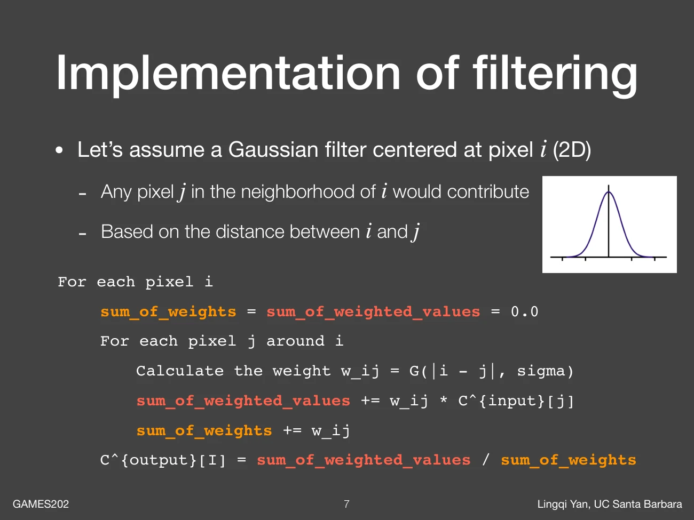
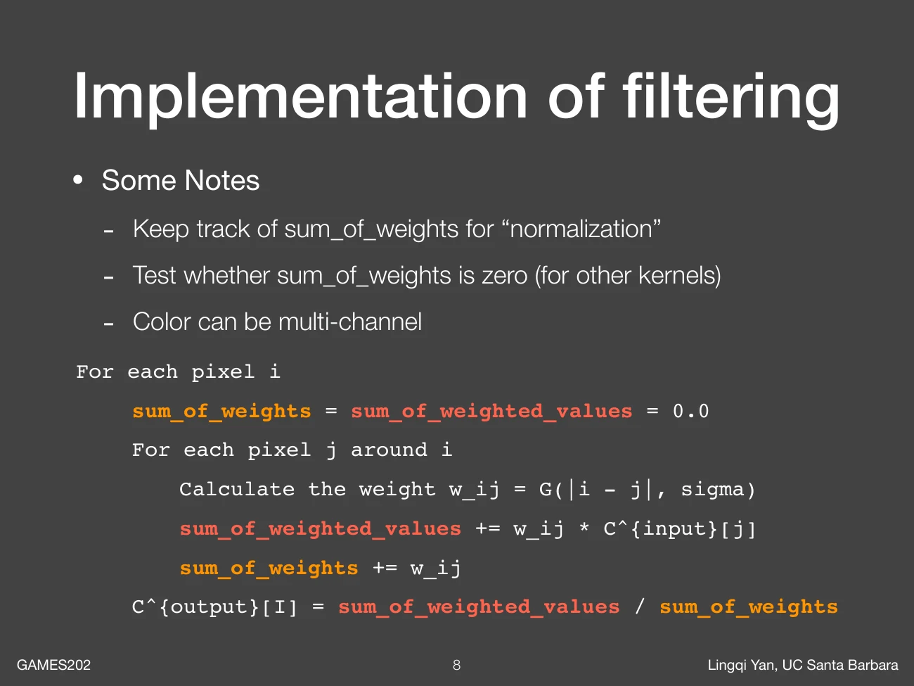
常见坑
忘记除以 sum_of_weights → 图像整体过亮或过暗，且亮度随核大小变化 → 检查输出前是否有除法。
权重和可能为 0（双边核在极端颜色差下）→ 输出 NaN 黑块 → 在除法前判断 sum_of_weights 是否接近 0，是则直接取原像素。
只对亮度通道滤波再拼回彩色 → 色度噪声残留 → 对 RGB 三通道分别累加，共用同一组权重。
UE / Unity 落地
UE 的后处理材质（Post Process Material）里可以用 SceneTexture 节点采样邻域，在 Custom 节点中写 HLSL 循环实现这个累加结构。
Unity 的 URP/HDRP 自定义 Renderer Feature 中，用 CommandBuffer.Blit 配合一个全屏 shader 做逐像素邻域采样，就是同样的骨架。
单通道高斯滤波的核心循环（伪代码）（hlsl）
float sumW = 0, sumV = 0;
for (int dy = -R; dy <= R; ++dy)
for (int dx = -R; dx <= R; ++dx) {
float w = exp(-(dx*dx + dy*dy) / (2*sigma*sigma));
sumV += w * tex.SampleLevel(samp, uv + float2(dx,dy)*texel, 0).r;
sumW += w;
}
outColor = sumW > 1e-6 ? sumV / sumW : tex.SampleLevel(samp, uv, 0).r;022. 双边滤波：在模糊噪声的同时保住边界
高斯滤波的问题很直观：它只看位置距离，所以图像里颜色突变的地方（物体的边界）也会被一起抹平。但边界恰恰是我们想保留的高频信息。
双边滤波（bilateral filtering）的观察是：边界 = 颜色剧烈变化的地方。于是它在高斯权重之外再乘一个颜色差权重：如果邻域像素 \(j\) 的颜色和中心像素 \(i\) 差得太多，就让 \(j\) 的贡献变小。公式上：
\[ w_{ij} = G_{\sigma_s}(|i-j|) \cdot G_{\sigma_r}(|\tilde{C}[i] - \tilde{C}[j]|) \]
其中第一项是空间距离的高斯，第二项是颜色距离的高斯。颜色差越大，第二项越接近 0，跨边界的像素几乎不参与平均，边界就被保住了。
课件强调：滤波过程本身会做归一化，所以第二个高斯不需要严格归一化，只要是一个随“距离”递减的函数即可。这也引出后面的推广：高斯不是唯一选择，指数函数、截断的余弦函数都可以。
双边滤波在图像去噪上效果很好，但在渲染降噪里有一个隐患：它用的是带噪声的颜色本身来判断颜色差。噪声会让本该相似的像素颜色差很大，导致权重不稳定。这就引出了下一节的联合双边滤波。
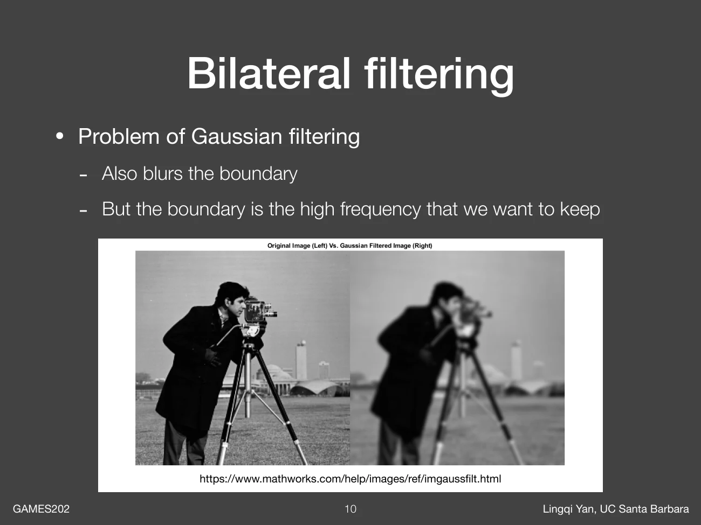
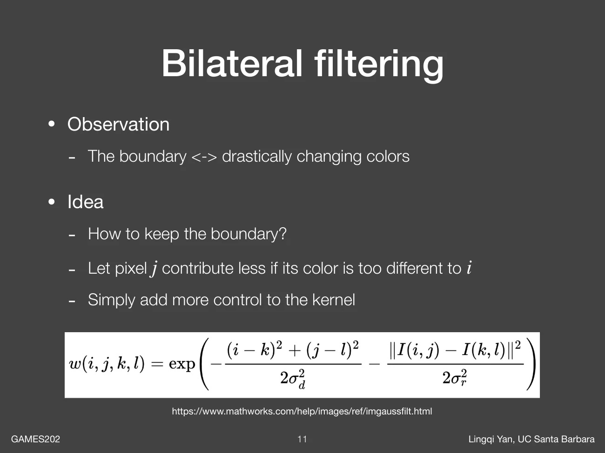
补充说明
双边滤波的权重是两个高斯的乘积，但归一化只需在最后做一次除法，不需要分别归一化两个高斯。
常见坑
颜色差权重用了未归一化的颜色（HDR 值域很大）→ 权重几乎全为 0，滤波失效 → 先把颜色变换到感知均匀空间（如 log 或 tonemap 后）再算差。
两个 sigma 没有分别调 → 要么噪声没去掉，要么边界被糊 → 空间 sigma 控制平滑范围，颜色 sigma 控制保边强度，分开调。
把双边滤波直接用于路径追踪结果 → 噪声本身让颜色差不可靠，降噪效果差 → 改用联合双边滤波，用无噪声的 G-buffer 做引导。
UE / Unity 落地
UE 的降噪器（如路径追踪器的 Denoiser）内部就是联合双边/à-trous 类滤波；在材质里手写时，可用 SceneTexture:WorldNormal 和 SceneTexture:SceneDepth 作为引导特征。
Unity HDRP 的路径追踪降噪同样使用 G-buffer 引导；自定义时可用
_CameraDepthTexture和_CameraNormalsTexture。
033. 联合双边滤波：用 G-buffer 当引导，专治路径追踪噪声
双边滤波用“颜色差”当第二个度量。课件接着问：能不能用更多特征来引导滤波？答案是肯定的，这就是交叉/联合双边滤波（cross / joint bilateral filtering）。
它在渲染里的独特优势来自 G-buffer：法线、深度、世界位置、物体 ID 等等，这些几何信息在渲染管线里是免费的，而且没有噪声——因为它们不参与多次弹射的光照计算。于是我们可以用这些干净的特征来判断“邻域像素该不该参与平均”：
- 法线差太大 → 不在同一平面，不参与；
- 深度差太大 → 不是同一物体表面，不参与；
- 物体 ID 不同 → 不参与；
- 颜色差太大 → 不参与。
课件给了一个直观例子：场景里有 A、B、C、D、E 几个区域，A 和 B 之间靠深度区分，B 和 C 之间靠法线区分，D 和 E 之间靠颜色区分。联合双边滤波会分别用对应的特征把边界保住。
一个重要的实现细节：度量本身不需要归一化，归一化由滤波过程的除法完成。另外高斯不是唯一选择，任何随距离递减的函数都行，比如指数函数、截断余弦。
课件明确说：你会在作业里实现这个。它也是后面 SVGF 等现代降噪器的基础。
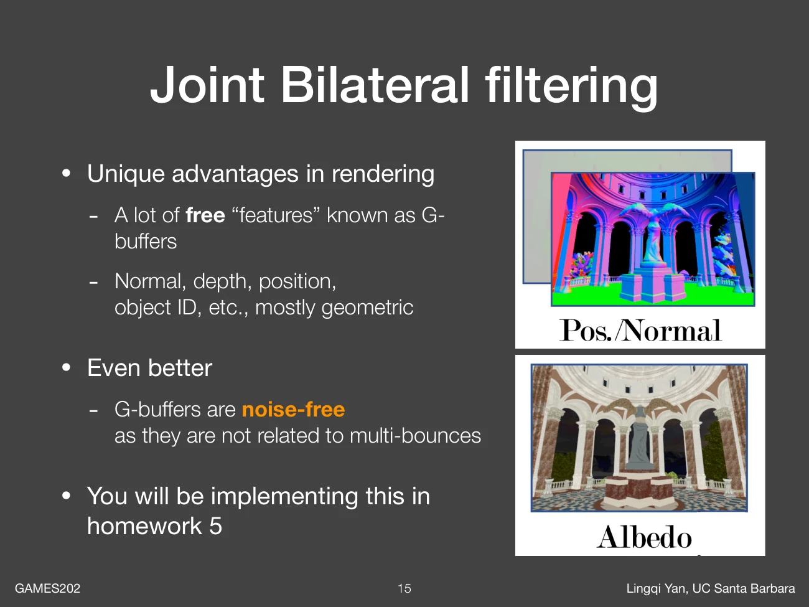
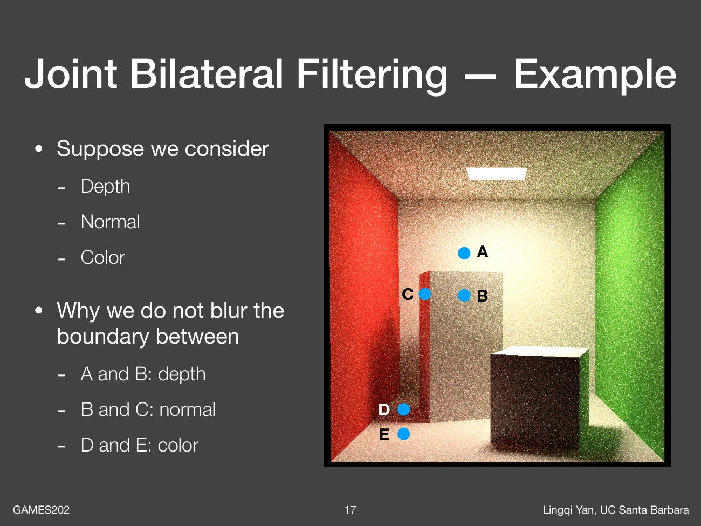
补充说明
联合双边滤波的“联合”指的是引导图像与待滤波图像不是同一张：待滤波的是带噪颜色，引导的是干净 G-buffer。
常见坑
深度直接用线性深度做差 → 远处像素深度差天然很大，权重全灭 → 用相对深度差（除以中心深度）或对数深度。
法线没归一化就做点积 → 法线差计算错误，边界判断失效 → 采样后先 normalize。
把 G-buffer 特征也做高斯归一化 → 多此一举且可能引入偏差 → 度量函数只需单调递减，归一化交给最终除法。
UE / Unity 落地
UE 的 SceneTexture 节点可直接取 WorldNormal、SceneDepth、CustomDepth/Stencil（物体 ID 的近似），在 Custom 节点里组合成联合双边权重。
Unity 的
_CameraDepthTexture、_CameraNormalsTexture以及CompareFunction的 Stencil 缓冲，可分别对应深度、法线、物体 ID 三种引导特征。
044. 大核滤波之一：可分离核拆成两趟
朴素实现每像素要遍历 \(N \times N\) 邻域，大核（比如 64×64）代价高得不可接受。课件给出两种解决方案，第一种是分离通道（separate passes）。
核心观察：2D 高斯核是可分离的：
\[ G_{2D}(x,y) = G_{1D}(x) \cdot G_{1D}(y) \]
而滤波等价于卷积，于是：
\[ \iint F(x,y)\, G_{2D}(x'-x, y'-y)\, dx\,dy = \int \left( \int F(x,y)\, G_{1D}(x'-x)\, dx \right) G_{1D}(y'-y)\, dy \]
也就是说，先做一趟水平 1×N 滤波，再做一趟垂直 N×1 滤波，结果和直接做 N×N 完全一样。查询次数从 \(N^2\) 降到 \(2N\)。课件用一张 DOTA 的图演示：原图 → 水平滤波后（水平方向变糊）→ 再垂直滤波后（两个方向都糊）。
但要注意课件里的限定词：理论上只有可分离的核才能这么拆。双边滤波的权重依赖颜色差，颜色差本身不是可分离的，所以严格来说双边滤波不能直接拆。工程上常见的做法是：对联合双边滤波，把颜色/特征权重在水平趟和垂直趟里分别计算（近似），或者干脆用下一节的 a-trous 方法。
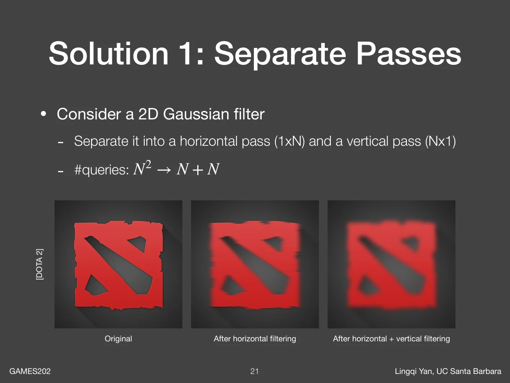
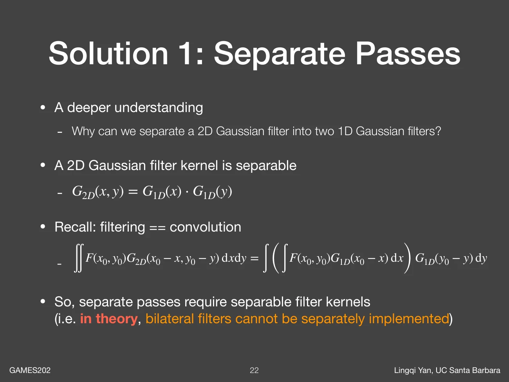
补充说明
可分离性的前提是核能写成 f(x)·g(y) 的形式；高斯、盒式核满足，双边核不严格满足。
常见坑
对双边滤波直接做两趟分离 → 结果与真实双边滤波有偏差（颜色权重不可分离）→ 接受近似，或改用 a-trous。
水平趟和垂直趟之间没有中间缓冲 → 读写同一张图导致数据竞争 → 用两张 RT 乒乓（ping-pong）切换。
核半径超过纹理尺寸 → 采样越界 → 采样时 clamp 到边缘或跳过越界样本。
UE / Unity 落地
UE 的后处理里做高斯模糊时，常用两个 Pass（水平、垂直）加两张 RenderTarget 乒乓，就是可分离滤波的典型用法。
Unity 的
Graphics.Blit配合临时 RT，两趟 shader 分别只沿 x、y 方向采样，是标准做法。
055. 大核滤波之二：渐进式增大尺寸（a-trous 小波）
第二种方案是渐进式增大尺寸（progressively growing sizes），具体实现叫 à-trous 小波。思路是：不直接做一次大核，而是做多趟小核（每趟都是 5×5），但每趟的采样间隔逐趟增大。
比如第 0 趟在原始分辨率上采样，第 1 趟每隔 1 个像素采一个（等效核变大），第 2 趟每隔 3 个像素，第 3 趟每隔 7 个像素……每趟都是 5×5 个样本，但覆盖的范围指数级增长。这样用很小的代价就能实现很大的等效核。
课件解释了为什么这样做是安全的，分两个问题：
- 为什么增大尺寸？ 应用更大的滤波器等价于去掉更低的频率。每一趟都在去掉当前频段的高频。
- 为什么可以跳采样而不混叠？ 采样等价于在频域上复制频谱。第 \(i\) 趟滤波后，高于某一截止频率的成分已经被去掉了，信号带宽变窄；此时用更大的采样间隔，复制出来的频谱不会重叠，因此不会产生混叠（no aliasing）。
课件还提到，这些滤波方法不仅可用于路径追踪降噪，也可以用于 PCSS 软阴影、SSR 等作业里的降噪。
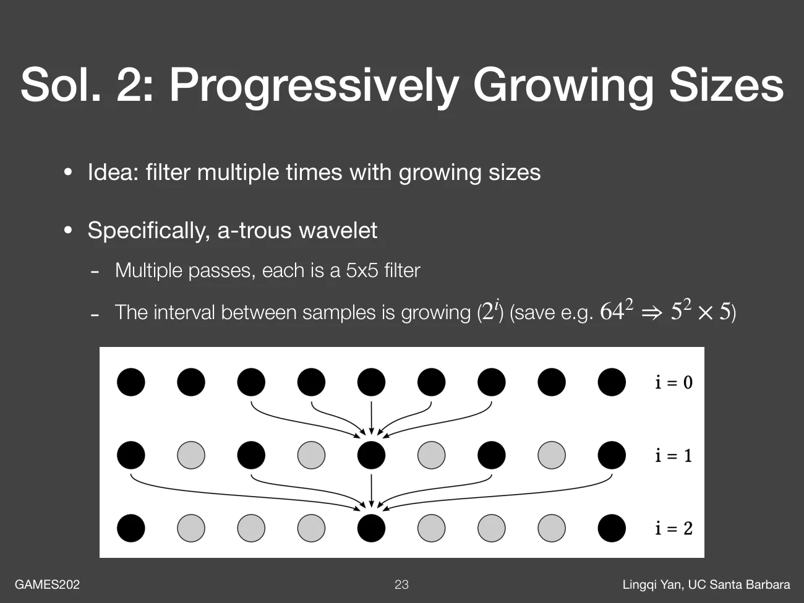
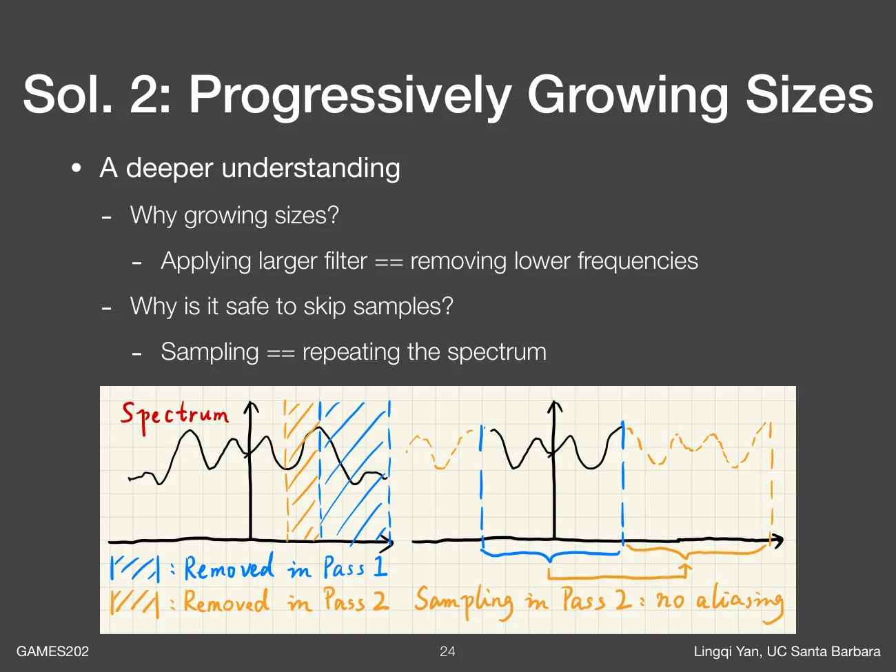
补充说明
à-trous 是法语“带洞的”意思，指滤波核里样本之间有间隔（洞），这正是跳采样的形象说法。
常见坑
每趟都从原始带噪图采样 → 噪声没有被逐趟压制，跳采样反而引入伪影 → 每趟的输入必须是上一趟的输出。
采样间隔增长太快（如每趟翻倍）→ 相邻样本间出现空洞，出现块状伪影 → 用 1,2,4,8… 或课件建议的 1,3,7… 这类受控增长。
把 a-trous 用于边缘处却不带引导特征 → 边界被糊 → 每趟的 5×5 权重里加入法线/深度/颜色项，即联合双边 à-trous。
UE / Unity 落地
UE 的 Lumen 与路径追踪降噪器使用 à-trous 类多趟滤波；在自定义后处理里可用多个 Pass 逐趟增大采样步长。
Unity HDRP 的降噪同样采用多趟递增步长的空间滤波，可在 Renderer Feature 中用循环 Dispatch 多个 Pass 实现。
066. 异常值剔除与时域钳制：滤波不是万能的
课件很实在地指出：滤波不是万能的。有时候滤波后的结果仍然有噪声，甚至出现块状伪影，主要原因是图像里存在极亮的像素（异常值，outliers）。一个极亮的像素会在邻域平均里“污染”一大片，形成块状亮斑。
思路很自然：能不能在滤波之前把这些异常值去掉？关键是怎么定义异常值。课件的做法是：
- 异常值检测：对每个像素，看它 7×7 的邻域，计算均值 \(\mu\) 和标准差 \(\sigma\)；如果像素值落在 \([\mu - k\sigma, \mu + k\sigma]\) 之外，就判定为异常值。
- 异常值剔除：把超出范围的值钳制（clamp）到区间边界上，而不是直接置零。置零会引入暗斑，钳制则保留了“这里很亮”的信息但限制了它的影响。
接着课件讲了时域钳制（temporal clamping）。时域复用（把上一帧的结果按 \(\alpha\) 混合进来）能大幅降噪，但会带来拖影（ghosting）：如果上一帧颜色 \(\bar{C}(i-1)\) 和当前帧颜色 \(C(i)\) 差很多，混合后就会拖出残影。做法是在复用前，把历史颜色钳制到当前帧邻域的 \([\mu - k\sigma, \mu + k\sigma]\) 区间内：
\[ C(i) = \alpha \bar{C}(i) + (1-\alpha)\, \mathrm{clamp}\big(C(i-1),\ \mu - k\sigma,\ \mu + k\sigma\big) \]
课件强调这是一个权衡（tradeoff）：钳制得紧，噪声小但拖影少？不，钳制得紧意味着历史颜色被拉向当前帧，拖影少但降噪效果变弱；钳制得松则降噪强但拖影明显。另外注意方向：是把历史颜色钳制向当前帧，而不是反过来。
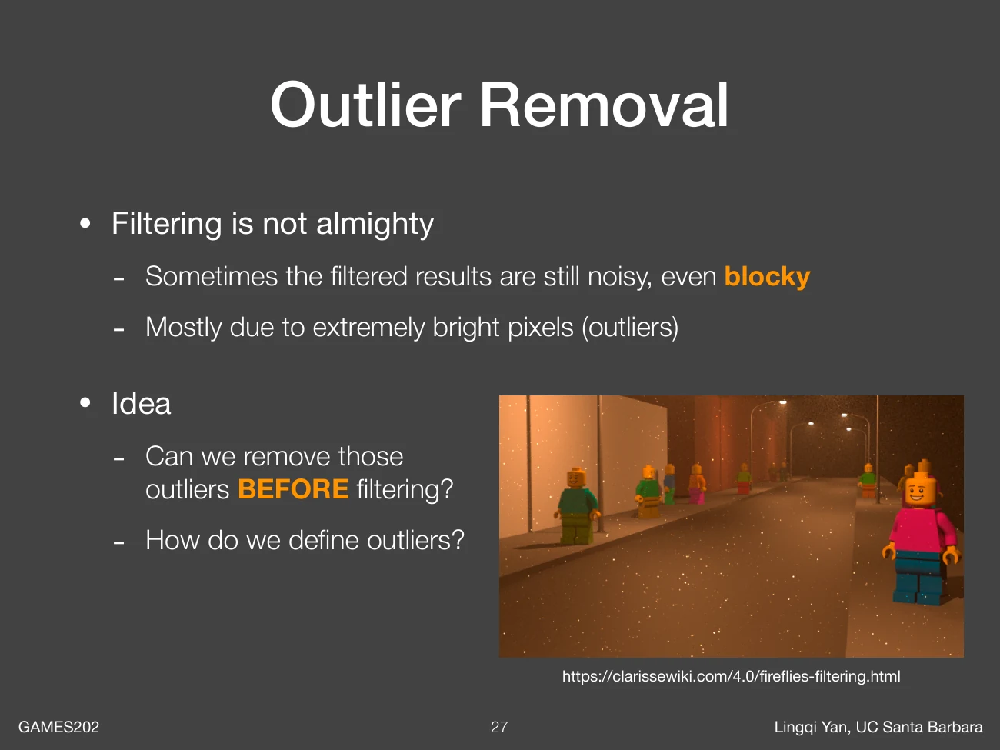
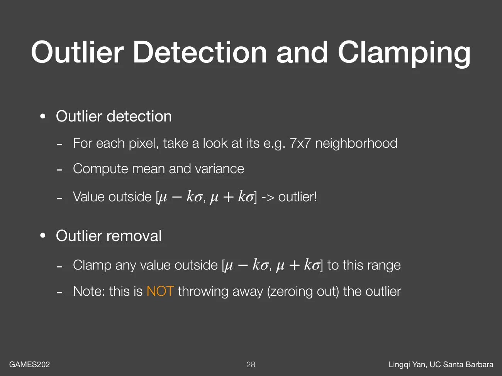
补充说明
异常值检测和时域钳制用的是同一套 μ±kσ 统计，只是一个作用在空间邻域、一个作用在时间维度。
常见坑
把异常值直接置零 → 出现暗斑，比原噪声更难看 → 钳制到 μ±kσ 边界。
k 取得太小 → 正常亮部也被当成异常值钳掉，高光细节丢失 → k 通常取 2~3，按场景调。
时域钳制方向搞反（把当前帧钳向历史）→ 拖影更严重 → 一定是 clamp(历史, 当前邻域 μ±kσ)。
α 固定不变 → 静止区域噪声大、运动区域拖影 → 可用运动向量自适应调整 α。
UE / Unity 落地
UE 的 TAA/Temporal Super Resolution 内部就有时域钳制（neighborhood clamping）来抑制拖影；后处理材质里可手动实现同样的 μ±kσ 逻辑。
Unity 的 TAA 同样使用邻域颜色钳制；自定义时域降噪时，可用运动向量（Motion Vector）配合钳制范围自适应。
引擎对照表
| 概念 / 效果 | Unreal Engine | Unity |
|---|---|---|
联合双边滤波引导特征 | SceneTexture:WorldNormal / SceneDepth / CustomStencil | _CameraNormalsTexture / _CameraDepthTexture / Stencil |
可分离高斯两趟模糊 | 两个后处理 Pass + 两张 RT 乒乓 | Graphics.Blit + 临时 RT，两趟 shader |
à-trous 多趟递增步长滤波 | Lumen / Path Tracer 降噪器的多 Pass 空间滤波 | HDRP 降噪，Renderer Feature 循环 Dispatch |
异常值钳制 | 后处理 Custom 节点内 μ±kσ clamp | 全屏 shader 内邻域统计后 clamp |
时域钳制抑制拖影 | TAA / TSR 的 neighborhood clamping | TAA 的邻域颜色钳制 |
术语双语表
| English | 中文 | 说明 |
|---|---|---|
| filtering | 滤波 | 对图像做邻域加权平均，压低高频噪声。 |
| filter kernel | 滤波核 | 决定邻域内各像素权重的函数，可逐像素不同。 |
| bilateral filtering | 双边滤波 | 距离权重 × 颜色差权重，保边去噪。 |
| joint bilateral filtering | 联合双边滤波 | 用 G-buffer 等额外特征做引导的双边滤波。 |
| G-buffer | 几何缓冲 | 法线、深度、位置、物体 ID 等无噪声几何信息。 |
| separable kernel | 可分离核 | 能写成 f(x)·g(y) 的核，可拆成两趟 1D 滤波。 |
| à-trous wavelet | à-trous 小波 | 多趟小核 + 递增采样间隔，实现大等效核。 |
| outlier | 异常值 | 极亮像素，会在滤波中造成块状伪影。 |
| temporal clamping | 时域钳制 | 把历史颜色钳到当前邻域 μ±kσ 内，抑制拖影。 |
课后练习
01 写出双边滤波的权重公式，并说明两个高斯分别控制什么。如果颜色差权重用未归一化的 HDR 颜色计算，会发生什么？
查看答案
提示：
考虑 HDR 值域远大于 0~1。
w_ij = G_σs(|i-j|) · G_σr(|C[i]-C[j]|)。第一项控制空间平滑范围，第二项控制保边强度。若用未归一化 HDR 颜色，颜色差可能达到几十上百，G_σr 迅速趋近 0，几乎所有邻域权重都接近 0，滤波退化为只取中心像素，噪声完全没去掉。应先把颜色变换到感知均匀空间（如 log 或 tonemap 后）再算差。
02 一个 64×64 的高斯核，朴素实现每像素需要多少次采样？用可分离两趟实现需要多少次？用 4 趟 5×5 的 à-trous 实现需要多少次？
查看答案
提示：
朴素是 N²，可分离是 2N，à-trous 是 趟数 × 25。
朴素：64×64 = 4096 次。可分离：64 + 64 = 128 次。à-trous：4 × 25 = 100 次。可见两种加速都把代价降了一到两个数量级。
03 为什么 à-trous 滤波可以逐趟增大采样间隔而不产生混叠？请用频域语言解释。
查看答案
提示：
采样等价于频谱复制；滤波去掉了高频。
采样在频域上等价于把信号频谱以采样频率为周期复制。第 i 趟滤波后，高于截止频率的成分已被移除，信号带宽变窄；此时即使采样间隔增大（采样频率降低），复制出来的频谱之间仍然不会重叠，因此不会混叠。换句话说，前一趟滤波已经为后一趟的跳采样“腾出了频域空间”。
04 某像素 7×7 邻域的均值 μ=0.5，标准差 σ=0.1，k=3。像素值为 1.2，应如何处理？如果像素值为 0.1 呢？
查看答案
提示：
区间是 [μ-kσ, μ+kσ]。
区间为 [0.5-0.3, 0.5+0.3] = [0.2, 0.8]。1.2 > 0.8，是异常值，钳制到 0.8（不是置零）。0.1 < 0.2，也是异常值，钳制到 0.2。注意两个方向都要钳制，且都是钳到边界而非丢弃。
05 在时域复用中，把历史颜色钳制到当前帧邻域的 μ±kσ 区间，k 取大和取小分别有什么后果？这体现了什么权衡？
查看答案
提示：
钳制范围宽 vs 窄。
k 大 → 钳制范围宽 → 历史颜色保留多 → 降噪效果好，但历史与当前差异大时拖影明显。k 小 → 钳制范围窄 → 历史颜色被强行拉向当前帧 → 拖影少，但时域复用带来的降噪收益变弱，噪声残留多。这体现了“噪声 vs 拖影（lagging）”的权衡，实际中常配合运动向量自适应调整。